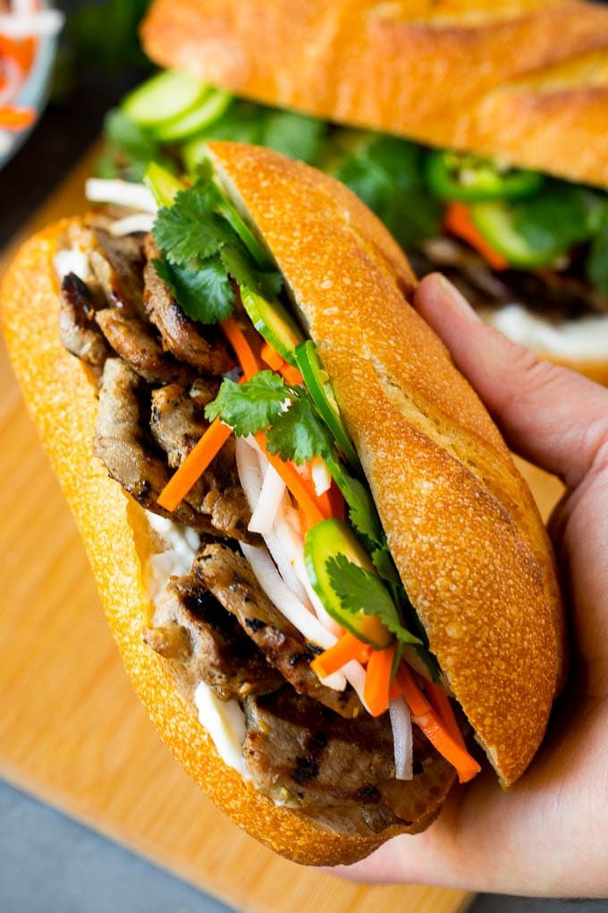
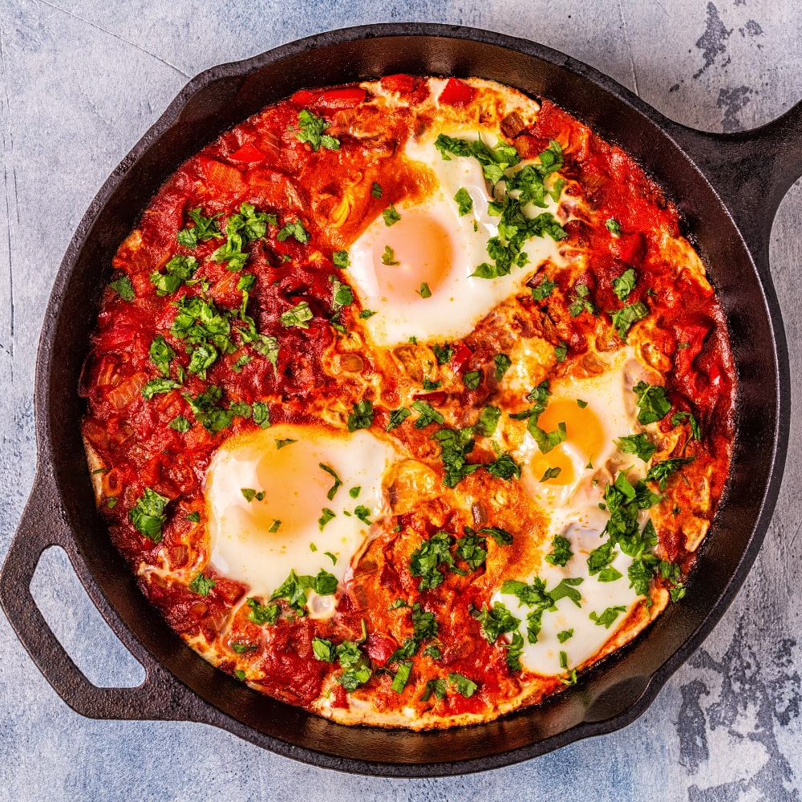

Recipe Blog
Food tells the story of history, culture, and creativity. This blog dives into the origins of two iconic dishes from opposite corners of the globe: Vietnam’s Bánh Mì and North Africa’s Shakshouka. These recipes not only tantalize the taste buds but also narrate tales of colonial influence, migration, and local innovation.The Bánh Mì, a Vietnamese twist on the French baguette, embodies a harmonious fusion of French colonial and Vietnamese flavors. From its humble beginnings as a baguette with European-style fillings, it evolved into a vibrant, portable sandwich, brimming with pickled vegetables, herbs, and savory meats. On the other hand, Shakshouka is a testament to North Africa’s Amazigh roots and Andalusian influences. Originating as a vegetable stew, it has transformed into a richly spiced dish of poached eggs in tomato sauce, celebrated for its adaptability and deep cultural ties. Through these two dishes, we explore how history shapes our plates, offering a taste of resilience, creativity, and global connections. Ready to learn their stories and try these recipes at home? Read on for more!
Vietnam
The origins of Bánh Mì, a celebrated Vietnamese sandwich, reflect a
fascinating blend of French colonial influence and Vietnamese culinary
ingenuity. During the French colonial period (1887–1954), baguettes
were introduced to Vietnam, initially reserved for the colonial elite.
Over time, bread became more accessible as local bakers modified it to
suit Vietnamese tastes, often using a mix of wheat and rice flours for
a lighter texture. By the 1950s, Bánh Mì had evolved into a uniquely
Vietnamese sandwich, especially in Saigon (now Ho Chi Minh City),
where it gained prominence. Its popularity has since spread globally,
celebrated for its balance of flavors and cultural significance. For
more information about the history of Bánh Mì, visit these sources:
Story of the banh mi: Vietnam’s super sandwich that took on the
world
Banh Mi: The Vietnamese Sandwich

Go to recipe
North Africa
Shakshouka is a dish with deep roots in North Africa, particularly
within the Maghreb region, encompassing Tunisia, Algeria, and Libya.
The name "shakshouka" originates from the Amazigh (Berber) word
"shakshak," meaning "a mixture," reflecting its preparation style.
Traditionally, the dish consists of a vegetable stew, later
incorporating tomatoes after their introduction from the Americas, and
often features poached eggs nestled within the sauce. The contemporary
form of shakshouka, with eggs and spices like chili peppers, was
influenced by Andalusian culinary traditions brought to North Africa
by Jews and Muslims expelled from Spain in the 15th and 16th
centuries. These communities enriched Tunisian cuisine with their love
for eggs and spicy seasonings, making shakshouka a recognizable staple
across the region. Over time, North African Jewish immigrants
introduced the dish to Israel, further popularizing it as a global
culinary icon. For more information about the history of Shakshouka,
visit these sources:
Shakshuka: A Culinary Journey Through North Africa and the Middle
East
Shakshuka's origins, where does it come from?

Go to recipe
Fun Facts
-
During the mid-20th century, Bánh Mì became a popular street food due to its affordability and portability, earning it a nickname as "the sandwich of the people" in Vietnam.
-
"Bánh mì" originally referred solely to bread, but over time, it has come to denote the entire sandwich in Vietnam and globally.
-
The dish evolved significantly after World War II when French influence in Vietnam diminished, leading to a rise in locally inspired fillings such as pickled vegetables, cilantro, and chili
Fun Facts
-
Shakshouka predates the arrival of tomatoes in North Africa. Early versions were made with seasonal vegetables and adapted based on ingredient availability, demonstrating its versatility and resourcefulness.
-
Tunisia's love affair with eggs, dubbed "Moorish Ovomania," played a significant role in shaping the modern shakshouka. The poached eggs in the dish are a hallmark of Andalusian influence brought to North Africa by exiles from Spain.
-
The dish's flexibility means it takes on new flavors wherever it travels. Modern versions might include bell peppers, onions, or even meats, adapting to local preferences and ingredients.